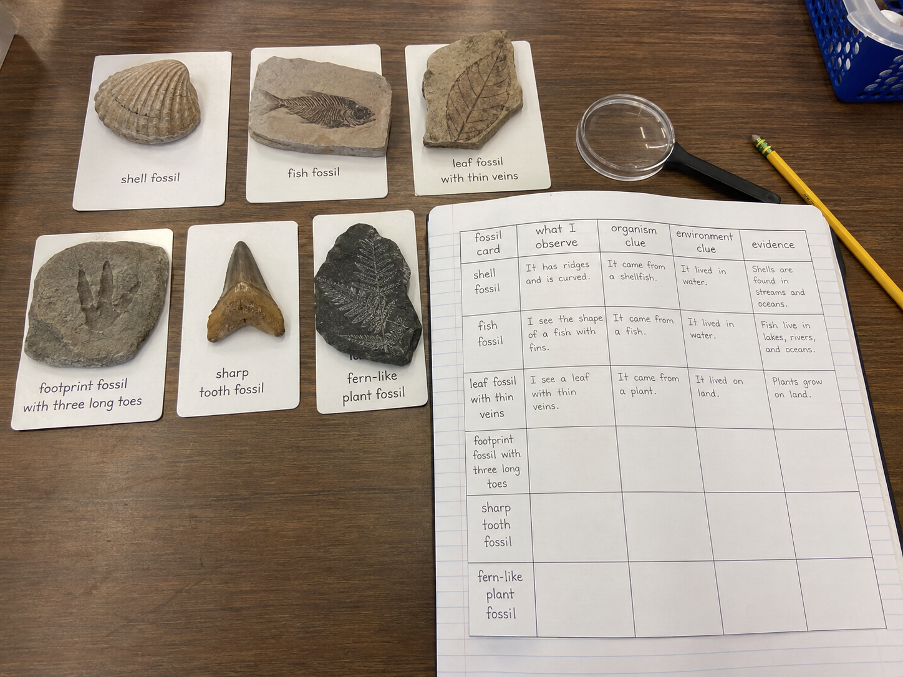
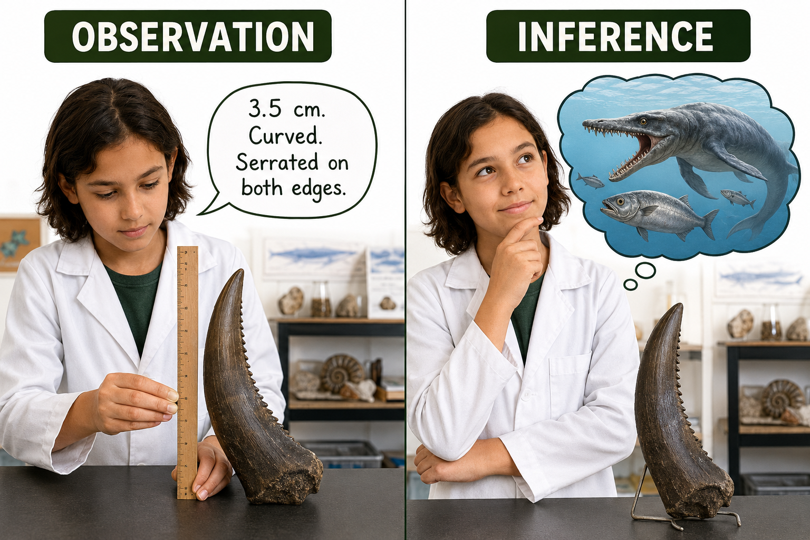
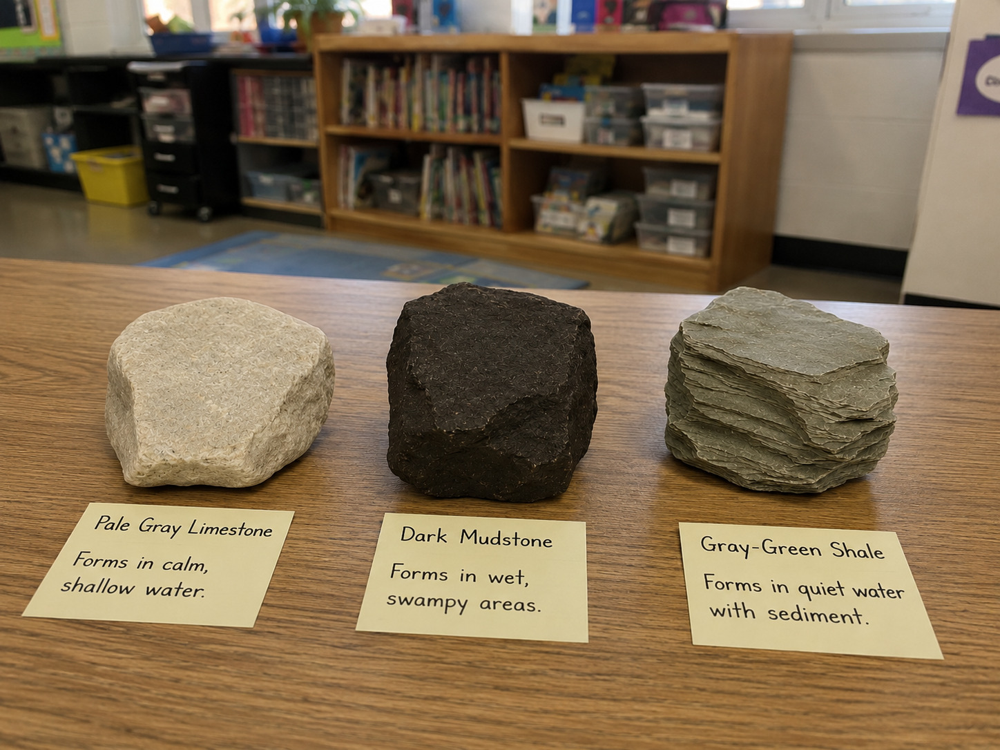
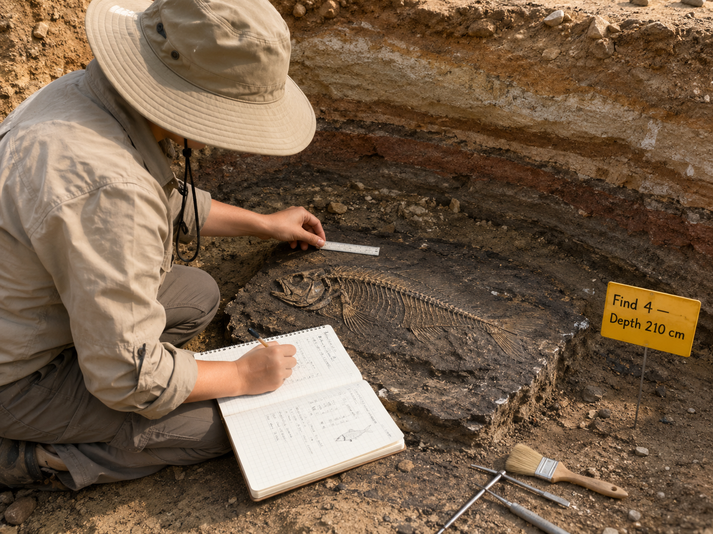

Keep this question in your mind. Today's investigation is exactly this — moving from clues to conclusions, one careful observation at a time.
Start here. Learn the words you will use today.
Imagine a scientist's investigation notebook opened to a data chart. Across the top are four column headings: What I observe — Organism clue — Environment clue — Evidence. Those aren't random words. Every heading is there for a reason.

There's no wrong answer here — this is what scientists actually debate. Hold onto your response. By the end of today's investigation, you'll know if you were right.
Lesson 17.01 introduced the big fossil vocabulary. Now we're adding the words scientists use when they actually do the work of analyzing fossil data. Tap each card to flip it!
Copy this sentence carefully into your science notebook:
"A paleontologist does not guess — every inference must be grounded in specific data collected from the fossil itself."
Now learn the main science idea.
Before a paleontologistpaleontologistA scientist who studies fossils to learn about ancient life. can explain anything, they have to look carefully and write down exactly what they see. This is called recording datadataInformation collected during a scientific investigation — observations, measurements, and descriptions..
An observation is only what your senses tell you. "The fossil has ridges" is an observation. "The fossil came from a shellfish" is already an inference. Getting those two things confused leads to weak science.

Once a paleontologist has recorded their observations, they analyzeanalyzeTo study data carefully, looking for patterns and details that support an explanation. the data. They ask: what patterns do I see? What does this remind me of in living organisms?
The conclusion they reach is called an inferenceinferenceA conclusion reached by combining what you observe with what you already know — backed by specific evidence.. A strong inference names the specific observation that supports it. "This animal may have eaten plants because its teeth are flat and wide" is a strong inference. "This animal looked weird" is not.
For a fossil to form, an organism needs to be buried quickly in sedimentsedimentTiny pieces of rock, sand, or mud that settle in layers over time and can preserve organisms. — sand, mud, or volcanic ash. That burial protects the remains from decay. Over millions of years, minerals replace the original material and the sediment hardens into rock.
The type of sediment matters as evidence. Dark mudstone often forms in wet, swampy conditions. Fine-grained limestone can form in calm, shallow water. So the rock itself is part of the data. Real-World Connection: Fossils found in dark shale tell paleontologists that a low-oxygen swamp once existed there — the same conditions that preserve remains so well.

Every inference a scientist makes must be connected to a specific observation. The stronger and more specific the observation, the stronger the inference. "I see flat grinding teeth, so this animal likely ate plants" is science. "It looks like it ate plants" is not.
Go Deeper: What Makes an Inference Weak?
Paleontologists sometimes disagree about what a fossil means — and that's actually healthy science. What causes the disagreement? Usually, it's the strength of the data.
A weak inference relies on only one clue. A strong inference draws from several observations that all point in the same direction. If a tooth is curved AND serrated AND found near small bone fragments, the predator inference is very strong. If you only have the tooth shape with no other data, another scientist could reasonably disagree.
This is why scientists record so much data before they conclude anything. More data = fewer wrong turns. It's also why science changes — new fossil discoveries can overturn old inferences. That's not a failure; it's science working exactly as it should.
Now test the idea yourself.
You'll need: Your science notebook and a pencil. The data has already been collected — your job is to analyze it.
📄 Field Memo — Site 7-B
Paleontologist Dr. A. Reyes spent three weeks excavating Site 7-B, a dry hillside location. She documented every find carefully before drawing any conclusions. Below is her raw data — five fossil finds at different depths. Your job: analyze the full dataset and write a Field Report describing what this site's ancient landscape looked like.

📋 Raw Field Data — Site 7-B
Work through each step in your notebook. You're analyzing Dr. Reyes's full dataset — not just one find at a time.
Separate data from inference. In your notebook, make a two-column chart: What the data says | What I might infer. Fill in one row for each of the five finds. Keep the columns separate — no mixing observations with conclusions.
Look for layer patterns. Which finds are in the same rock type? Circle them. What does sharing a layer tell you — did those organisms live at the same time, or different times? Note your thinking.
Resolve the puzzle. Find 2 (fern plant) is at 140 cm. Find 4 (fish) is at 210 cm — deeper, so older. A land plant and a water fish in different layers at the same site. What does that tell you about how this environment changed over time? Write 2–3 sentences working through your reasoning.
Write the Field Report. Dr. Reyes needs to submit 4–6 sentences describing what Site 7-B's ancient landscape looked like across time. Write it for her. Every claim you make must reference a specific find number as your evidence — for example, "Find 4 suggests a water environment because…"
Read back through your field report. Every claim should be traceable to a specific find. If you can't point to the data, the claim is too weak to keep.
Narrate the history of Site 7-B from the oldest layer to the newest — tell the story of how this place changed over time, using your five finds as the evidence.
Think through each question on your own first. Write your answers in your notebook before moving on.
Check what you understand.
Show what you learned.
🔍 Part A — Observation or Inference?
For each statement below, write whether it is an observation or an inference — then explain how you know.
🚀 Part B — Short Answer
Answer each question in complete sentences. Use your science vocabulary!
Think about the fossil card you studied most closely. Walk through your full scientific thinking — from what you saw to what you concluded.
What specific data did you record?
💡 Start with: "When I analyzed this fossil, I recorded the following observations…"
What inference did your data support — and why is it strong?
💡 Start with: "My inference is that… I know this because the data shows…"
What would make your inference even stronger?
💡 Start with: "My inference could be stronger if I also had…"
📚 Try to use at least one of these words in your answer: data, analyze, inference, sediment, paleontologist
🎨 Part C — Site 7-B Cross-Section
Draw a side-view cross-section of Site 7-B. Show all five finds at their correct depths (80, 138/140, 205/210 cm). Label the rock type at each layer, mark where each find was located, and draw a small sketch of what the ancient environment looked like at each layer — water, swamp, coastline, etc.
Submit your work on Canvas using one of these options:
Make sure your submission includes all of these: